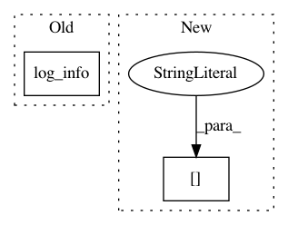

0c573dda88e351090519b6410e8fa53e05ff1250,dataset/research/workers.py,PipelineWorker,init,#PipelineWorker#,28
Before Change
n_branches = Config()
worker_config = self.kwargs.get("config", Config())
self.log_info(worker_config, filename=self.logfile)
single_running.add_common_config(config.config()+n_branches+worker_config)
single_running.init()
self.single_runnings.append(single_running)
After Change
if pipeline["dump_for"] is not None:
pipeline["dump_for"] = self.get_iterations(pipeline["dump_for"], task["n_iters"])
else:
pipeline["dump_for"] = []
single_running.add_pipeline(pipeline_copy, pipeline["var"],
name=name, post_run=pipeline["post_run"], **pipeline["kwargs"])
if isinstance(task["n_branches"], list):
In pattern: SUPERPATTERN
Frequency: 3
Non-data size: 2
Instances
Project Name: analysiscenter/batchflow
Commit Name: 0c573dda88e351090519b6410e8fa53e05ff1250
Time: 2018-03-30
Author: a.kozhevin@analysiscenter.ru
File Name: dataset/research/workers.py
Class Name: PipelineWorker
Method Name: init
Project Name: UFAL-DSG/tgen
Commit Name: 4bd3c056d7a3a1ebaf3c040944708912d001abd3
Time: 2016-04-14
Author: odusek@ufal.mff.cuni.cz
File Name: tgen/seq2seq.py
Class Name: Seq2SeqGen
Method Name: train
Project Name: UFAL-DSG/tgen
Commit Name: 95d5ace25456c186f7a914e690d1f69bac184889
Time: 2016-01-15
Author: odusek@ufal.mff.cuni.cz
File Name: tgen/seq2seq.py
Class Name: Seq2SeqGen
Method Name: _init_training